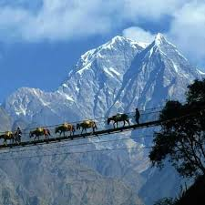
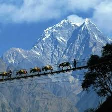
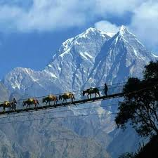

Mount Everest is Earth's highest mountain above sea level, located in the Mahalangur Himal sub-range of the Himalayas. Its elevation (snow height) of 8,848.86 m (29,031.7 ft) was most recently established in 2020 by the Chinese and Nepali authorities.[3]
Mount Everest attracts many climbers, including highly experienced mountaineers. There are two main climbing routes, one approaching the summit from the southeast in Nepal (known as the "standard route") and the other from the north in Tibet. While not posing substantial technical climbing challenges on the standard route, Everest presents dangers such as altitude sickness, weather, and wind, as well as hazards from avalanches and the Khumbu Icefall. As of 2019, over 300 people have died on Everest,[4] many of whose bodies remain on the mountain.[5]

One of the most popular villages among avid travelers in Nepal is the Namche Bazaar. Known mostly as World's highest trading hub and gateway to Everest, Namche Bazaar is a small town located in the Khumbu region at an altitude of 3440m. Travelers on the journey to Everest Base Camp usually acclimatize at Namche Bazaar.For many, Nepal's greatest attraction is its people. The traditions and famous hospitality of its many different groups are indeed a major part of what makes Nepal so special. From remote mountain villages to medieval hill-towns and the ancient cities of the Kathmandu Valley, the people of Nepal are always welcoming.